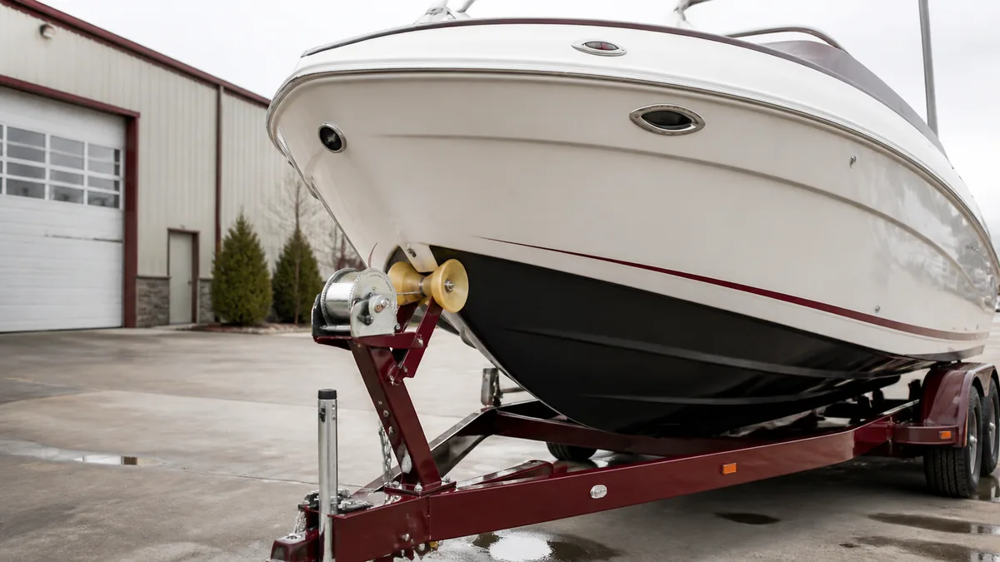

ЛОДКИ · 01
Весенняя подготовка лодки и прицепа
Спокойный осмотр до первого спуска помогает заметить мелочи, которые на воде превращаются в проблему.

Корпус и крепёж
- Вымойте корпус и осмотрите гелькоут на трещины, сколы и следы расслоения.
- Проверьте сливную пробку, люки, петли и уплотнители.
- Осмотрите транец и точки крепления оборудования: люфт и следы влаги требуют диагностики.
Прицеп
Проверьте давление и возраст шин, ступицы, сцепное устройство, лебёдку, страховочный трос и светотехнику. Не забудьте о запасном колесе и корректно подключённом разъёме.
Перед спуском
Подготовьте жилеты, якорь, швартовы, аптечку и документы. После короткого первого выхода повторно осмотрите корпус на берегу.
Порядок подготовки
Начинайте за несколько дней до спуска: сначала корпус и крепёж, затем прицеп, мотор и оснащение. После короткого первого выхода повторно осмотрите лодку на берегу: свежие следы воды и ослабший крепёж заметнее всего в этот момент.
Когда нужна диагностика
- Есть трещина возле транца, киля или креплений.
- Ступица греется, колесо имеет люфт или шина повреждена.
- Не работают помпа, огни или рулевое управление.
Полезно после проверки
Перед сезоном полезно составить короткий список расходников и замечаний. Он помогает не забыть о мелком ремонте, а сервису — быстрее подготовить понятную смету без повторных осмотров.